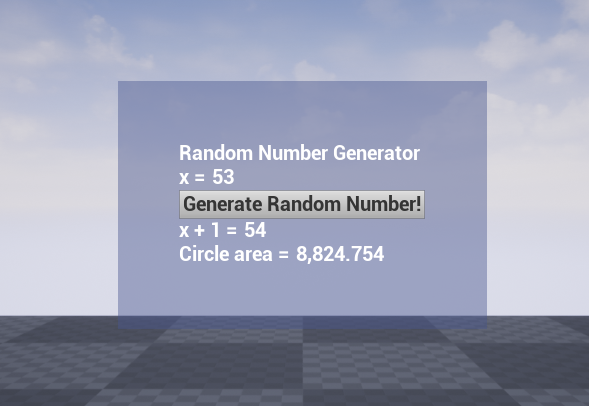

Unreal Engine Experiments
I have been practicing C++ programming with Unreal Engine. My goal is to soon create Blueprint bindings for a C++ library I find very useful. In general, I'm learning to write Unreal-flavored C++ and interface it with Blueprint scripting.
Work samples

The user interface- press a button to create a random number. The random number is then passed into an included C++ DLL, which returns the other numbers below the button.
An example of how this project uses blueprints to abstract the lower-level programming. The C++ function to load the DLL can be called by a level designer without opening the code. Then the rest of the DLL's functions are exposed.